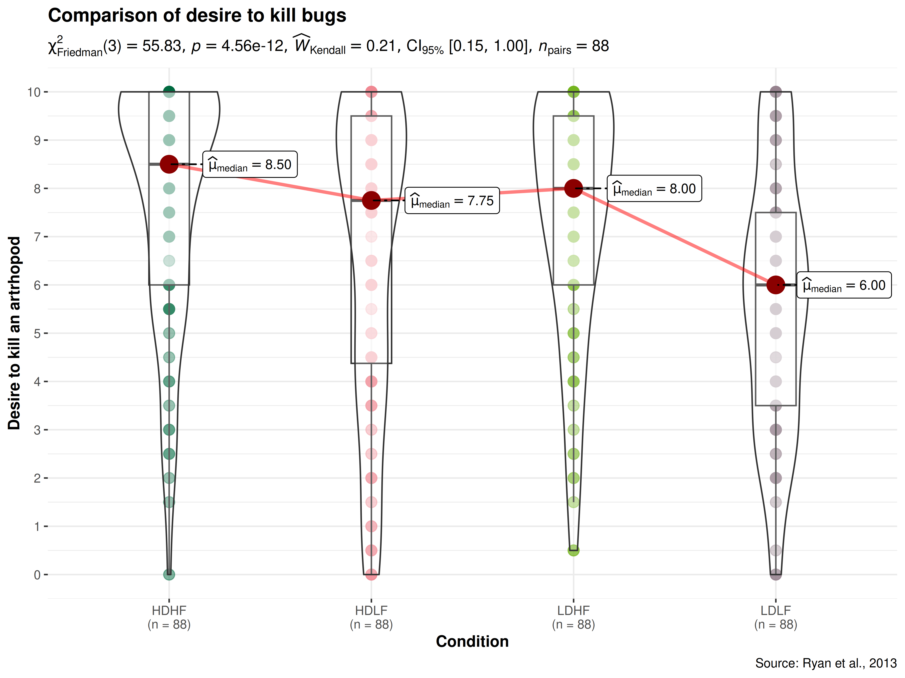
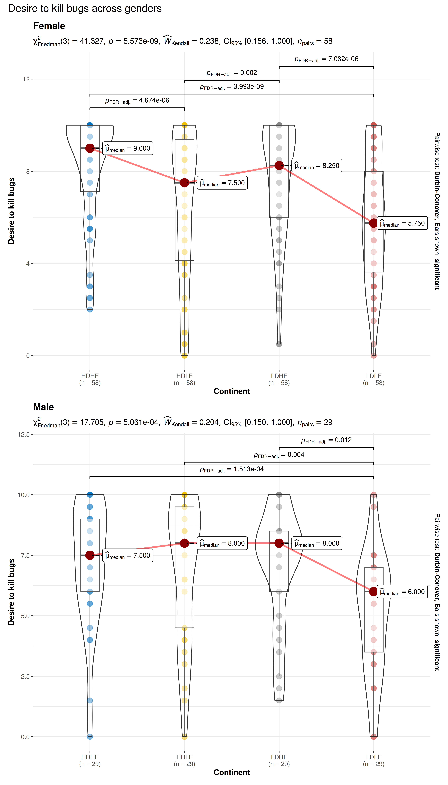

You can cite this package/vignette as:
To cite package 'ggstatsplot' in publications use:
Patil, I. (2021). Visualizations with statistical details: The
'ggstatsplot' approach. Journal of Open Source Software, 6(61), 3167,
doi:10.21105/joss.03167
A BibTeX entry for LaTeX users is
@Article{,
doi = {10.21105/joss.03167},
url = {https://doi.org/10.21105/joss.03167},
year = {2021},
publisher = {{The Open Journal}},
volume = {6},
number = {61},
pages = {3167},
author = {Indrajeet Patil},
title = {{Visualizations with statistical details: The {'ggstatsplot'} approach}},
journal = {{Journal of Open Source Software}},
}Lifecycle: 
The function ggwithinstats is designed to facilitate
data exploration, and for making highly customizable
publication-ready plots, with relevant statistical
details included in the plot itself if desired. We will see examples of
how to use this function in this vignette.
To begin with, here are some instances where you would want to use
ggwithinstats-
to check if a continuous variable differs across multiple groups/conditions
to compare distributions visually
Note: This vignette uses the pipe operator
(%>%), if you are not familiar with this operator, here
is a good explanation: http://r4ds.had.co.nz/pipes.html
Comparisons between groups with ggwithinstats
To illustrate how this function can be used, we will use the
bugs dataset throughout this vignette. This data set,
“Bugs”, provides the extent to which men and women want to kill
arthropods that vary in freighteningness (low, high) and disgustingness
(low, high). Each participant rates their attitudes towards all
anthropods. Subset of the data reported by Ryan
et al. (2013). Note that this is a repeated measures design because
the same participant gave four different ratings across four different
conditions (LDLF, LDHF, HDLF, HDHF).
Suppose the first thing we want to inspect is the distribution of desire to kill across all conditions (disregarding the factorial structure of the experiment). We also want to know if the mean differences in this desire across conditions is statistically significant.
The simplest form of the function call is-
ggwithinstats(
data = bugs_long,
x = condition,
y = desire
)Note:
The function automatically decides whether a dependent samples test is preferred (for 2 groups) or an ANOVA (3 or more groups). based on the number of levels in the grouping variable.
The output of the function is a
ggplotobject which means that it can be further modified with ggplot2 functions.
As can be seen from the plot, the function by default returns Bayes Factor for the test. If the null hypothesis can’t be rejected with the null hypothesis significance testing (NHST) approach, the Bayesian approach can help index evidence in favor of the null hypothesis (i.e., ).
By default, natural logarithms are shown because Bayes Factor values can sometimes be pretty large. Having values on logarithmic scale also makes it easy to compare evidence in favor alternative () versus null () hypotheses (since ).
We can make the output much more aesthetically pleasing as well as
informative by making use of the many optional parameters in
ggwithinstats. We’ll add a title and caption, better
x and y axis labels. We can and will change
the overall theme as well as the color palette in use.
ggwithinstats(
data = bugs_long,
x = condition,
y = desire,
type = "nonparametric", ## type of statistical test
xlab = "Condition", ## label for the x-axis
ylab = "Desire to kill an artrhopod", ## label for the y-axis
package = "yarrr", ## package from which color palette is to be taken
palette = "info2", ## choosing a different color palette
title = "Comparison of desire to kill bugs",
caption = "Source: Ryan et al., 2013"
) + ## modifying the plot further
ggplot2::scale_y_continuous(
limits = c(0, 10),
breaks = seq(from = 0, to = 10, by = 1)
)
As can be appreciated from the effect size (partial eta squared) of 0.18, there are small differences in the mean desire to kill across conditions. Importantly, this plot also helps us appreciate the distributions within any given condition.
So far we have only used a classic parametric test, but we can also
use other available options: The type (of test) argument
also accepts the following abbreviations: "p" (for
parametric), "np" (for nonparametric),
"r" (for robust), "bf" (for Bayes
Factor).
Let’s use the combine_plots function to make one plot
from four separate plots that demonstrates all of these options. Let’s
compare desire to kill bugs only for low versus high disgust conditions
to see how much of a difference whether a bug is disgusting-looking or
not makes to the desire to kill that bug. We will generate the plots one
by one and then use combine_plots to merge them into one
plot with some common labeling. It is possible, but not necessarily
recommended, to make each plot have different colors or themes.
For example,
## selecting subset of the data
df_disgust <- dplyr::filter(bugs_long, condition %in% c("LDHF", "HDHF"))
## parametric t-test
p1 <- ggwithinstats(
data = df_disgust,
x = condition,
y = desire,
type = "p",
effsize.type = "d",
conf.level = 0.99,
title = "Parametric test",
package = "ggsci",
palette = "nrc_npg"
)
## Mann-Whitney U test (nonparametric test)
p2 <- ggwithinstats(
data = df_disgust,
x = condition,
y = desire,
xlab = "Condition",
ylab = "Desire to kill bugs",
type = "np",
conf.level = 0.99,
title = "Non-parametric Test",
package = "ggsci",
palette = "uniform_startrek"
)
## robust t-test
p3 <- ggwithinstats(
data = df_disgust,
x = condition,
y = desire,
xlab = "Condition",
ylab = "Desire to kill bugs",
type = "r",
conf.level = 0.99,
title = "Robust Test",
package = "wesanderson",
palette = "Royal2"
)
## Bayes Factor for parametric t-test
p4 <- ggwithinstats(
data = df_disgust,
x = condition,
y = desire,
xlab = "Condition",
ylab = "Desire to kill bugs",
type = "bayes",
title = "Bayesian Test",
package = "ggsci",
palette = "nrc_npg"
)
## combining the individual plots into a single plot
combine_plots(
plotlist = list(p1, p2, p3, p4),
plotgrid.args = list(nrow = 2L),
annotation.args = list(
title = "Effect of disgust on desire to kill bugs ",
caption = "Source: Bugs dataset from `jmv` R package"
)
)
Grouped analysis with grouped_ggwithinstats
What if we want to carry out this same analysis but for each region (or gender)?
ggstatsplot provides a special helper function for
such instances: grouped_ggwithinstats. This is merely a
wrapper function around combine_plots. It applies
ggwithinstats across all levels of a
specified grouping variable and then combines list of
individual plots into a single plot. Note that the grouping variable can
be anything: conditions in a given study, groups in a study sample,
different studies, etc.
Let’s focus on the two regions and for years: 1967, 1987, 2007. Also, let’s carry out pairwise comparisons to see if there differences between every pair of continents.
grouped_ggwithinstats(
## arguments relevant for ggwithinstats
data = bugs_long,
x = condition,
y = desire,
grouping.var = gender,
xlab = "Continent",
ylab = "Desire to kill bugs",
type = "nonparametric", ## type of test
pairwise.display = "significant", ## display only significant pairwise comparisons
p.adjust.method = "BH", ## adjust p-values for multiple tests using this method
# ggtheme = ggthemes::theme_tufte(),
package = "ggsci",
palette = "default_jco",
digits = 3,
## arguments relevant for combine_plots
annotation.args = list(title = "Desire to kill bugs across genders"),
plotgrid.args = list(ncol = 1)
)
Grouped analysis with ggwithinstats +
{purrr}
Although this grouping function provides a quick way to explore the
data, it leaves much to be desired. For example, the same type of test
and theme is applied for all genders, but maybe we want to change this
for different genders, or maybe we want to gave different effect sizes
for different years. This type of customization for different levels of
a grouping variable is not possible with
grouped_ggwithinstats, but this can be easily achieved
using the purrr package.
See the associated vignette here: https://indrajeetpatil.github.io/ggstatsplot/articles/web_only/purrr_examples.html
Between-subjects designs
For independent measures designs, ggbetweenstats
function can be used: https://indrajeetpatil.github.io/ggstatsplot/articles/web_only/ggbetweenstats.html
Summary of graphics and tests
Details about underlying functions used to create graphics and statistical tests carried out can be found in the function documentation: https://indrajeetpatil.github.io/ggstatsplot/reference/ggwithinstats.html
Reporting
If you wish to include statistical analysis results in a publication/report, the ideal reporting practice will be a hybrid of two approaches:
the ggstatsplot approach, where the plot contains both the visual and numerical summaries about a statistical model, and
the standard narrative approach, which provides interpretive context for the reported statistics.
For example, let’s see the following example:
library(WRS2) # for data
ggwithinstats(WineTasting, Wine, Taste)The narrative context (assuming type = "parametric") can
complement this plot either as a figure caption or in the main text-
Fisher’s repeated measures one-way ANOVA revealed that, across 22 friends to taste each of the three wines, there was a statistically significant difference across persons preference for each wine. The effect size was medium, as per Field’s (2013) conventions. The Bayes Factor for the same analysis revealed that the data were 8.25 times more probable under the alternative hypothesis as compared to the null hypothesis. This can be considered moderate evidence (Jeffreys, 1961) in favor of the alternative hypothesis. This global effect was carried out by post hoc pairwise t-tests, which revealed that Wine C was preferred across participants to be the least desirable compared to Wines A and B.
Similar reporting style can be followed when the function performs t-test instead of a one-way ANOVA.
Suggestions
If you find any bugs or have any suggestions/remarks, please file an
issue on GitHub: https://github.com/IndrajeetPatil/ggstatsplot/issues